Private Sub Command1_Click()
If Text1.Text = "" Then
MsgBox "Tulis data dulu donk gimana sih..", vbCricital + vbOKOnly, "Warning"
Exit Sub
End If
Label1.Caption = Text1.Text
End Sub
Private Sub Command2_Click()
Label1.Caption = ""
End Sub
Private Sub Option1_Click()
Label1.BackColor = vbCyan
End Sub
Private Sub Option10_Click()
Label1.Font.Size = 24
End Sub
Private Sub Option11_Click()
Label1.Font.Size = 28
End Sub
Private Sub Option12_Click()
Label1.BackColor = vbMagenta
End Sub
Private Sub Option13_Click()
Label1.ForeColor = vbGreen
End Sub
Private Sub Option14_Click()
Label1.Font = "stencil"
End Sub
Private Sub Option15_Click()
Label1.Font = "algerian"
End Sub
Private Sub Option16_Click()
Label1.Font.Size = 30
End Sub
Private Sub Option2_Click()
Label1.BackColor = vbYellow
End Sub
Private Sub Option3_Click()
Label1.BackColor = vbWhite
End Sub
Private Sub Option4_Click()
Label1.ForeColor = vbBlue
End Sub
Private Sub Option5_Click()
Label1.ForeColor = vbBlack
End Sub
Private Sub Option6_Click()
Label1.ForeColor = vbRed
End Sub
Private Sub Option7_Click()
Label1.Font = "script mt bold"
End Sub
Private Sub Option8_Click()
Label1.Font = "agency fb"
End Sub
Private Sub Option9_Click()
Label1.Font.Size = 20
End Sub
Ini adalah contoh interfacenya :
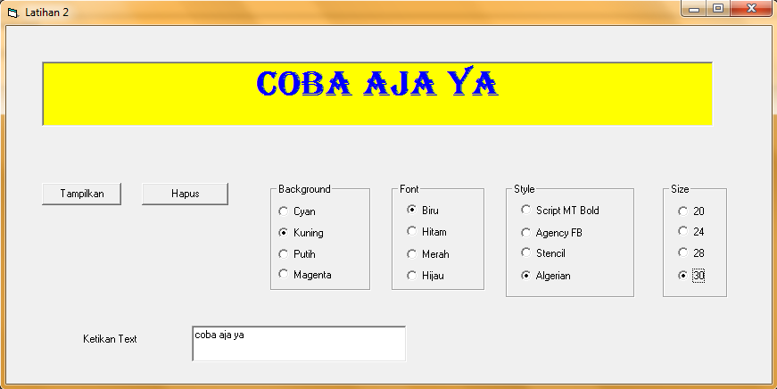
Private Sub cmdKet_Click()
If cmbWarna.Text = "merah" Then
Text1 = "Berhenti"
Text1.BackColor = vbRed
ElseIf cmbWarna.Text = "kuning" Then
Text1 = "Hati-Hati"
Text1.BackColor = vbYellow
Else
Text1 = "Berjalan"
Text1.BackColor = vbGreen
End If
End Sub
Ini adalah contoh interfacenya :
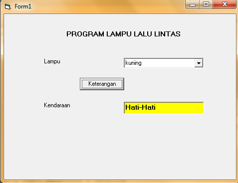
Private Sub cmdHapus_Click()
lblTk.Caption = ""
lblTj.Caption = ""
lblPph.Caption = ""
lblGaji.Caption = ""
lblGapok.Caption = ""
txtNama.Text = ""
cmbGol.Text = ""
txtNama.SetFocus
End Sub
Private Sub cmdHitung_Click()
'1. Menentukan nilai gaji pokok
Select Case cmbGol.Text
Case "A": vGapok = 1500000
Case "B": vGapok = 2000000
Case "C": vGapok = 2500000
End Select
'2. Menghitung Tunjangan Jabatan
vTj = 20 / 100 * vGapok
'3. Menghitung Tunjangan Keluarga
If cbxStatus.Value = 1 Then
vTk = 25 / 100 * vGapok
Else
vTk = 0
End If
'4. Menghitung Pajak PPh
vPph = 15 / 100 * (vGapok + vTj + vTk)
'5. Menghitung Gaji Bersih
vGaji = vGapok + vTj + vTk + vPph
'Menampilkan Output
lblGapok.Caption = Format(vGapok, "currency")
lblTj.Caption = Format(vTj, "currency")
lblTk.Caption = Format(vTk, "currency")
lblPph.Caption = Format(vPph, "currency")
lblGaji.Caption = Format(vGaji, "currency")
End Sub
Ini adalah contoh interfacenya :
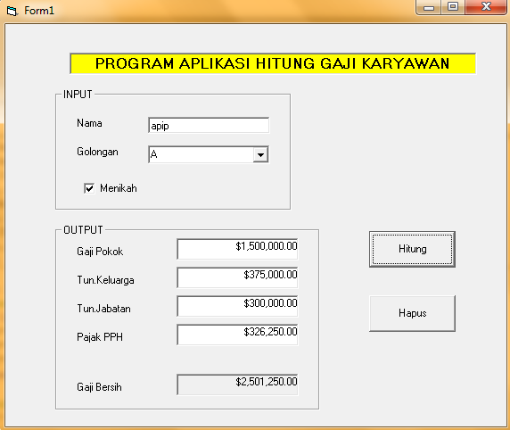
Dim vjam, vmenit, vdetik, vjamawal As Single
Dim vjamakhir, vdurasi, vpulsa, vbayar As Single
Private Sub cmdAngkat_Click()
lblJamawal = Time
vjam = DatePart("h", lblJamawal)
vmenit = DatePart("n", lblJamawal)
vdetik = DatePart("s", lblJamawal)
vjamawal = (vjam * 3600) + (vmenit * 60) + vdetik
End Sub
Private Sub cmdTutup_Click()
lblJamakhir = Time
vjam = DatePart("h", lblJamakhir)
vmenit = DatePart("n", lblJamakhir)
vdetik = DatePart("s", lblJamakhir)
vjamakhir = (vjam * 3600) + (vmenit * 60) + vdetik
vdurasi = vjamakhir - vjamawal
vpulsa = vdurasi / 5
vbayar = vpulsa * 150
lblBayar = Format(vbayar, "currency")
End Sub
Private Sub Timer1_Timer()
lblJam = Time
End Sub
Ini adalah contoh interfacenya :
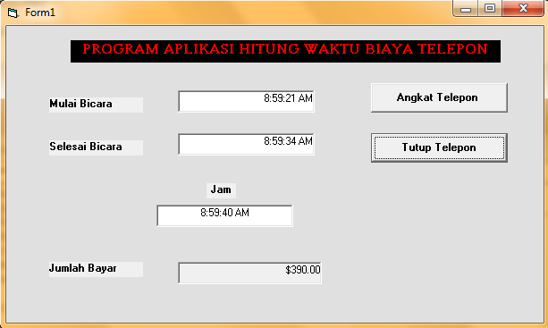
form 1
Dim RS As ADODB.Recordset
Dim vtotal As Single
Private Sub cmdcetak_Click()
Open "d:\nota.txt" For Output As #1
Print #1, " INDOMART"
Print #1, " Jl. Raya Setu Kp.Bahagia Tambun"
Print #1, ""
Print #1, " No : " + txtnota.Text + " Tanggal : " + Str(dtptgl.Value) + " Kasir : " + txtkasir.Text
Print #1, "---------------------------------------------"
Print #1, "No"; Tab(4); "Nama Barang"; Tab(26); "Harga"; Tab(35); "Qty"; Tab(40); "Jumlah"
Print #1, "============================================="
RS.MoveFirst
For X = 1 To RS.RecordCount
If RS.Fields("nama_barang") <> "" Then
no = no + 1
'mencetak nilai variabel ke dalam file laporan
Print #1, no; Tab(4); RS.Fields(0); Tab(26);
Print #1, RS.Fields(1); Tab(35);
Print #1, RS.Fields(2); Tab(40);
Print #1, RS.Fields(3)
End If
RS.MoveNext
Next X
Print #1, "----------------------------------------------"
Print #1, Tab(26); "Total : "; Tab(35); Format(vtotal, "currency")
Print #1, ""
Print #1, ""
Print #1, Tab(10); "terimakasih , semoga anda puas"
Close #1
nota.Show
End Sub
Private Sub cmdhapus_Click()
lbltotal.Caption = ""
RS.MoveFirst
For X = 1 To RS.RecordCount
RS.Delete
RS.Update
RS.MoveNext
Next X
For X = 1 To 20
RS.AddNew
Next X
RS.MoveFirst
grdtabel.SetFocus
End Sub
Private Sub Form_Load()
'memberikan nilai variabel dengan objek data
Set RS = New ADODB.Recordset
'membuat struktur tabel
RS.Fields.Append "Nama_Barang", adVarChar, 50
RS.Fields.Append "Harga", adSingle, 50
RS.Fields.Append "Qty", adSingle, 50
RS.Fields.Append "Jumlah", adSingle, 50
'mengaktifkan variabel data objek
RS.Open
'memasukan objek data ke dalam objek grid
Set grdtabel.DataSource = RS
'mengatur tampilan tabel
'a. mengatur lebar kolom
grdtabel.Columns(0).Width = 3000
'memberi baris data kosong
For X = 1 To 20
RS.AddNew
Next X
RS.MoveFirst
End Sub
Private Sub grdtabel_AfterColEdit(ByVal ColIndex As Integer)
Select Case ColIndex
Case 0:
grdtabel.Col = 1
Case 1:
grdtabel.Col = 2
Case 2:
RS.Fields("Jumlah") = RS.Fields("Harga") * RS.Fields("Qty")
vtotal = vtotal + (RS.Fields("Harga") * RS.Fields("Qty"))
lbltotal.Caption = Format(vtotal, "currency")
grdtabel.Col = 0
RS.MoveNext
End Select
End Sub
form 2
Private Sub Form_Load()
rtbnota.FileName = "d:\nota.txt"
End Sub
Ini adalah contoh interfacenya :
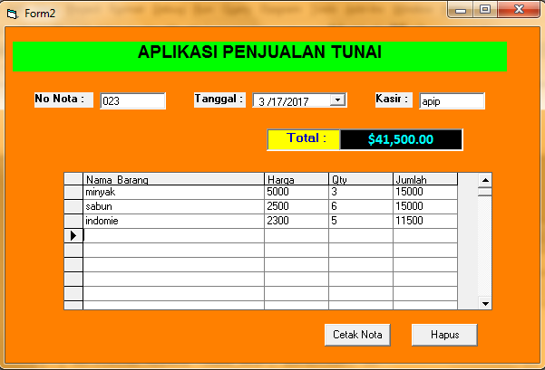
ini adalah inteface jika anda mengklik button cetak nota :
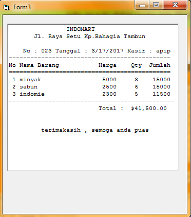
Private Sub Command1_Click()
Text3 = Format(Val(Text1) + Val(Text2), "currency")
End Sub
Private Sub Command2_Click()
Text1.Text = ""
Text2.Text = ""
Text3.Text = ""
Text1.SetFocus
End Sub
Ini adalah contoh interfacenya :
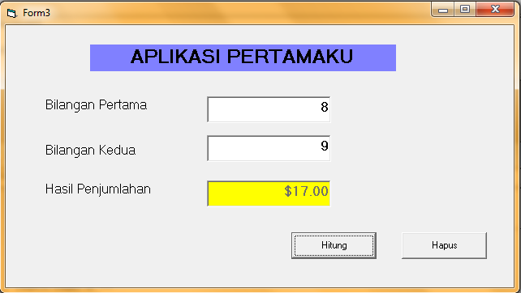
Dim vsuku, x As Single
Dim vhasil As String
Private Sub Command1_Click()
vsuku = 2
'x = 1
'Do While x <= 10
'vhasil = vhasil + Str(vsuku)
'vsuku = vsuku + 2
'x = x + 1
'Loop
'Do Until x > 10
'vhasil = vhasil + Str(vsuku)
'vsuku = vsuku + 2
'x = x + 1
'Loop
For x = 1 To 10
vhasil = vhasil + Str(vsuku)
vsuku = vsuku + 2
Next x
Text1.Text = vhasil
End Sub
Ini adalah contoh interfacenya :
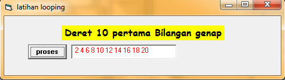
Dim vnama(10) As String
Dim vgapok(10), vtun(10), vpajak(10) As Single
Dim vgaji(10) As Single
Dim j, i As Integer
Private Sub cmdcetak_Click()
Open "D:\Output.txt" For Output As #1
Print #1, " DATA GAJI KARYAWAN"
Print #1, "=============================================================="
Print #1, " NO"; Tab(6); "NAMA"; Tab(21); "GAPOK"; Tab(31); "TUNJANGAN"; Tab(46); "PAJAK"; Tab(57); "GAJI"
Print #1, "=============================================================="
For i = 1 To j
Print #1, i; Tab(6); vnama(i); Tab(20); vgapok(i); Tab(30); vtun(i); Tab(45); vpajak(i); Tab(55); vgaji(i)
Next i
Print #1, "=============================================================="
Close #1
rtbtampil.FileName = "D:\Output.txt"
End Sub
Private Sub cmdhitung_Click()
For i = 1 To j
vtun(i) = 20 / 100 * vgapok(i)
vpajak(i) = 15 / 100 * (vgapok(i) + vtun(i))
vgaji(i) = vgapok(i) + vtun(i) - vpajak(i)
Next i
MsgBox "proses hitung selesai", vbOKOnly + vbInformation, "informasi"
End Sub
Private Sub cmdsimpan_Click()
j = j + 1
vnama(j) = txtnama.Text
vgapok(j) = Val(txtgapok.Text)
txtnama.Text = ""
txtgapok.Text = ""
txtnama.SetFocus
MsgBox "Data berhasil di simpan.", vbInformation + vbOKOnly, "informasi"
End Sub
Ini adalah contoh interfacenya :
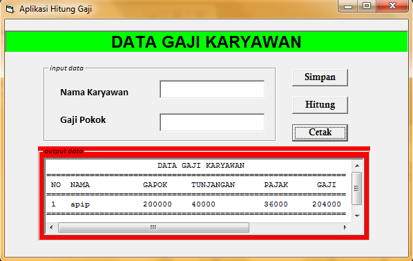
Dim vnama(10) As String
Dim vkwh(10), vdaya(10), vabod(10), vpajak(10), vpakai(10) As Single
Dim vtarif(20) As Single
Dim vtagihan(10) As Single
Dim j, i As Integer
Private Sub cmdcetak_Click()
Open "D:\2116007.txt" For Output As #1
Print #1, " DATA TAGIHAN PELANGGAN PLN"
Print #1, "==========================================================================================="
Print #1, " NO"; Tab(6); "NAMA"; Tab(20); "DAYA"; Tab(30); "KWH"; Tab(45); "ABODEMEN"; Tab(60); "BY.KWH"; Tab(70); "PPJ"; Tab(80); "TAGIHAN"
Print #1, "==========================================================================================="
For i = 1 To j
Print #1, i; Tab(6); vnama(i); Tab(19); vdaya(i); Tab(29); vkwh(i); Tab(45); vabod(i); Tab(59); vpakai(i); Tab(69); vpajak(i); Tab(80); vtagihan(i)
Next i
Print #1, "==========================================================================================="
Close #1
rtbtampil.FileName = "D:\2116007.txt"
End Sub
Private Sub cmdhitung_Click()
For i = 1 To j
If vdaya(i) = 450 Then
vtarif(i) = "250"
Else
If vdaya(i) = 900 Then
vtarif(i) = "350"
Else
If vdaya(i) = 1300 Then
vtarif(i) = "550"
End If
End If
End If
If vdaya(i) = 1300 Then
vabod(i) = "35000"
Else
vabod(i) = "20000"
End If
vpakai(i) = vtarif(i) * vkwh(i)
vpajak(i) = 5 / 100 * vpakai(i)
vtagihan(i) = vabod(i) + vpakai(i) + vpajak(i)
Next i
MsgBox "proses hitung selesai", vbOKOnly + vbInformation, "informasi"
End Sub
Private Sub cmdsimpan_Click()
j = j + 1
vnama(j) = txtnama.Text
vdaya(j) = Val(cbxdaya.Text)
vkwh(j) = Val(txtkwh.Text)
txtnama.Text = ""
txtkwh.Text = ""
cbxdaya.Text = ""
txtnama.SetFocus
MsgBox "data berhasil di input", vbOKOnly + vbInformation, "informasi"
End Sub
Ini adalah contoh interfacenya :
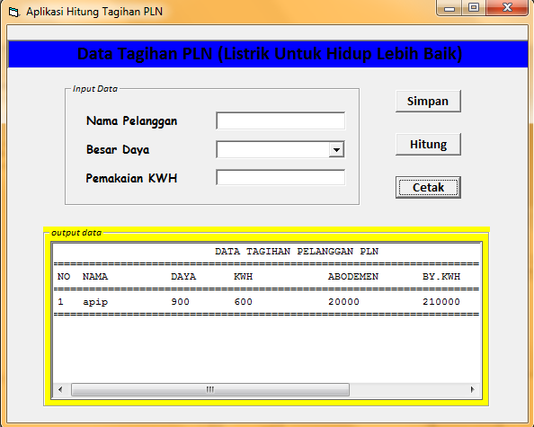
Dim vnama(10), vket(10), vnilai(10) As String
Dim vtugas(10), vuts(10), vuas(10), vrata(10) As Single
Dim i, j As Integer
Private Sub cmdcetak_Click()
Open "D:\daftarnilai.txt" For Output As #1
Print #1, " DATA NILAI SEMESTER MAHASISWA"
Print #1, "=============================================================="
Print #1, " NO"; Tab(6); "NAMA"; Tab(21); "RATA2"; Tab(31); "NILAI"; Tab(46); "KET"
Print #1, "=============================================================="
For i = 1 To j
Print #1, i; Tab(9); vnama(i); Tab(25); vrata(i); Tab(41); vnilai(i); Tab(57); vket(i)
Next i
Print #1, "=============================================================="
Close #1
rtbtampil.FileName = "D:\daftarnilai.txt"
End Sub
Private Sub cmdhitung_Click()
For i = 1 To j
vrata(i) = (20 / 100 * vtugas(i)) + (30 / 100 * vuts(i)) + (50 / 100 * vuas(i))
If vrata(i) >= 80 Then
vket(i) = "LULUS"
Else
If vrata(i) >= 70 Then
vket(i) = "LULUS"
Else
If vrata(i) >= 55 Then
vket(i) = "LULUS"
Else
If vrata(i) >= 41 Then
vket(i) = "GAGAL"
Else
If vrata(i) < 40 Then
vket(i) = "GAGAL"
End If
End If
End If
End If
End If
If vrata(i) >= 80 Then
vnilai(i) = "A"
Else
If vrata(i) >= 70 Then
vnilai(i) = "B"
Else
If vrata(i) >= 55 Then
vnilai(i) = "C"
Else
If vrata(i) >= 41 Then
vnilai(i) = "D"
Else
If vrata(i) < 40 Then
vnilai(i) = "E"
End If
End If
End If
End If
End If
Next i
MsgBox "proses hitung selesai", vbOKOnly + vbInformation, "informasi"
End Sub
Private Sub cmdsimpan_Click()
j = j + 1
vnama(j) = txtnama.Text
vtugas(j) = Val(txttugas.Text)
vuts(j) = Val(txtuts.Text)
vuas(j) = Val(txtuas.Text)
txtnama.Text = ""
txttugas.Text = ""
txtuas.Text = ""
txtuts.Text = ""
txtnama.SetFocus
MsgBox "Data berhasil di simpan.", vbInformation + vbOKOnly, "informasi"
End Sub
Ini adalah contoh interfacenya :
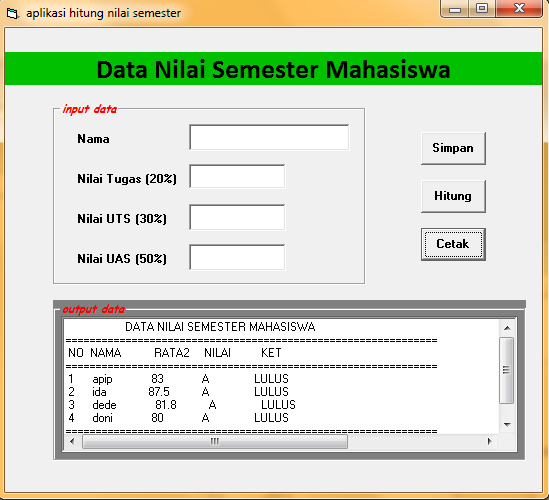
Dim vnama(10), vket(10) As String
Dim vpsikotes(10), vumum(10), vmatematik(10), vrata(10) As Single
Dim i, j As Integer
Private Sub cmdcetak_Click()
Open "D:\daftartes.txt" For Output As #1
Print #1, " DATA NILAI PESERTA TES"
Print #1, "======================================"
Print #1, " NO"; Tab(6); "NAMA"; Tab(25); "RATA2"; Tab(40); "KET"
Print #1, "======================================"
For i = 1 To j
Print #1, i; Tab(8); vnama(i); Tab(30); vrata(i); Tab(50); vket(i)
Next i
Print #1, "======================================"
Close #1
rtbtampil.FileName = "D:\daftartes.txt"
End Sub
Private Sub cmdhitung_Click()
For i = 1 To j
vrata(i) = (vpsikotes(i) + vmatematik(i) + vumum(i)) / 3
If vrata(i) >= 75 Then
vket(i) = "LULUS"
Else
vket(i) = "GAGAL"
End If
Next i
MsgBox "proses hitung selesai", vbOKOnly + vbInformation, "informasi"
End Sub
Private Sub cmdsimpan_Click()
j = j + 1
vnama(j) = txtnama.Text
vpsikotes(j) = Val(txtpsikotes.Text)
vumum(j) = Val(txtumum.Text)
vmatematik(j) = Val(txtmatematik.Text)
txtnama.Text = ""
txtpsikotes.Text = ""
txtumum.Text = ""
txtmatematik.Text = ""
txtnama.SetFocus
MsgBox "Data berhasil di simpan.", vbInformation + vbOKOnly, "informasi"
End Sub
Ini adalah contoh interfacenya :
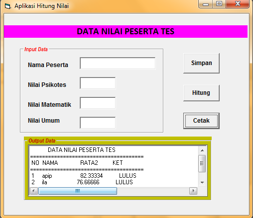
Dim vnama(10), vkelas(10) As String
Dim vcekin(10), vcekout(10), vlamainap(10), vbayar(10) As Single
Dim i, j As Integer
Dim vtarif(10) As Single
Private Sub cmdcetak_Click()
Open "D:\tamuhotel.txt" For Output As #1
Print #1, " DATA TAMU HOTEL ALEXIS"
Print #1, "========================================================================="
Print #1, " NO"; Tab(6); "NAMA"; Tab(25); "CEK IN"; Tab(40); "CEK OUT"; Tab(55); "KAMAR"; Tab(70); "TARIF"; Tab(80); "HARI"; Tab(90); "BIAYA"
Print #1, "========================================================================="
For i = 1 To j
Print #1, i; Tab(8); vnama(i); Tab(28); vcekin(i); Tab(43); vcekout(i); Tab(60); vkelas(i); Tab(75); vtarif(i); Tab(88); vlamainap(i); Tab(98); vbayar(i)
Next i
Print #1, "========================================================================="
Close #1
rtbtampil.FileName = "D:\tamuhotel.txt"
End Sub
Private Sub cmdhitung_Click()
For i = 1 To j
If vkelas(i) = "de-lux" Then
vtarif(i) = "400000"
Else
If vkelas(i) = "de-suite" Then
vtarif(i) = "350000"
Else
If vkelas(i) = "vip" Then
vtarif(i) = "500000"
End If
End If
End If
vlamainap(i) = vcekout(i) - vcekin(i)
If vlamainap(i) < 2 Then
vbayar(i) = vtarif(i) * 2
Else
vbayar(i) = vtarif(i) * vlamainap(i)
End If
Next i
MsgBox "proses hitung selesai", vbOKOnly + vbInformation, "informasi"
End Sub
Private Sub cmdsimpan_Click()
j = j + 1
vnama(j) = txtnama.Text
vkelas(j) = cbxkelas.Text
vcekin(j) = dtpcekin.Value
vcekout(j) = dtpcekout.Value
txtnama.Text = ""
cbxkelas.Text = ""
txtnama.SetFocus
MsgBox "Data berhasil di simpan.", vbInformation + vbOKOnly, "informasi"
End Sub
Ini adalah contoh interfacenya :
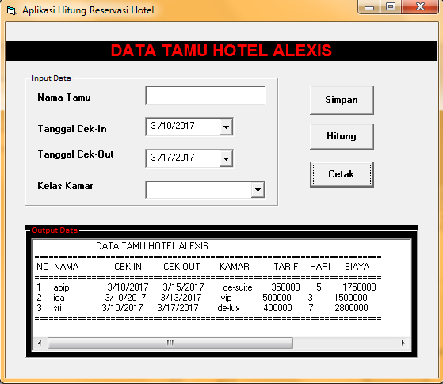
Langkah – langkah :
1. Membuat folder terlebih dahulu yang nantinya untuk menyimpan aplikasi vb dan Microsoft accesnya.
• nama folder yang saya buat disini (database barang)
• direktori atau tempat penyimpanannya D:\AMIK\pemrograman visual basic\database barang
terserah kalian akan memberi nama foldernya apa dan menyimpan foldernya dimana..
misalkan untuk lebih gampang :
• nama folder (database barang)
• direktori atau tempat penyimpanannya D:\database barang
2. Membuat databasenya dengan menggunakan Microsoft acces.
Cara nya :
• Buka Microsoft acces
• Pilih blank desktop database
• Tulis di kolom file name misalkan yang saya buat disini (inventory.accdb)
• Klik browse yang ada di samping kolom filename yaitu untuk menyimpannya pada folder tadi yaitu (database barang)
(usahakan satu folder dengan aplikasi vb nya ya..)
• lalu pilih create
lihat gambar di bawah ini.!!
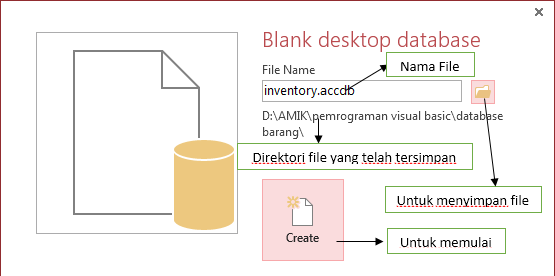
• Membuat designnya dengan mengklik kanan pada table pilih design view dan beri judul misalkan (barang).
Lihat gambar.!!
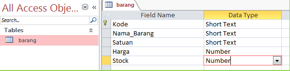
| Field name | Field size |
|---|---|
| Kode | 03 |
| Nama_barang | 50 |
| Satuan | 10 |
| Harga | single |
| Stock | single |
| Tool | Properties | Nama |
|---|---|---|
| textbox1 | name | txtkode |
| textbox2 | name | txtnama |
| combobox1 | name | cbxsatuan |
| list | pcs,sachet,box | |
| textbox3 | name | txtharga |
| textbox4 | name | txtstock |
| commandbutton1 | name | cmdhapus |
| commandbutton2 | name | cmdcetak |
| commandbutton3 | name | cmdsimpan |
| commandbutton4 | name | cmdbatal |
| commandbutton5 | name | cmdubah |
| datagrid1 | name | grdtabel |
| caption | daftar barang | |
| adodc1 | name | adobarang |
| visible | false |
Cara menghubungkan koneksi antara query report dan database microsoft acces.
Langkah – langkah :
• Pilih menu project – pilih add crystal report 8.5 – pilih as a blank report - pilih ok.
Seperti gambar.!!
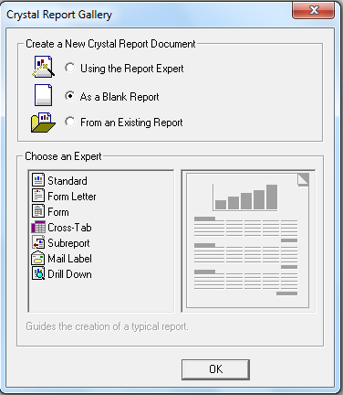
• Lalu akan muncul gambar dibawah ini.!!
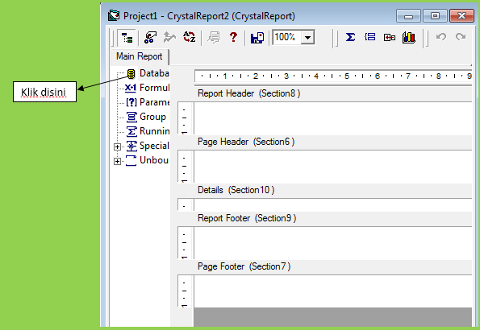
• Klik kanan pada icon database – klik add database report
• Pilih more… (yang paling bawah) – pilih active data – pilih active data ado
• Lalu akan muncul spt gmbr di bawah !!
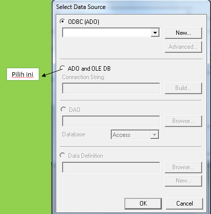
• Klik/pilih ADO and OLE DB – pilih build lalu masukan pdirektorinya pada kolom datasource (seperti di atas)
• lalu pilih test connection – pilih ok – ok lagi.
• Lalu pilih add… – pilih ok – ok lagi.
• Lalu klik database field – klik ado – lalu drag setiap nama field ke kolom details.
Seperti gambar.!!
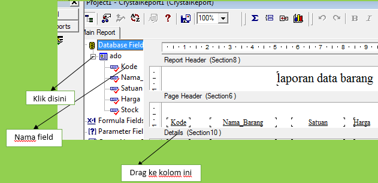
(untuk memberi judul “laporan data barang” caranya klik kanan – pilih insert – text object)
Seperti gambar.!!
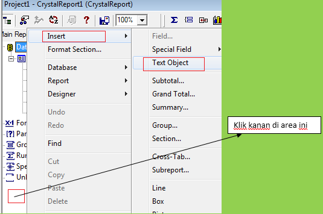
• Lalu coba anda run pada form 2 (untuk melihat tamplannya sudah oke atau belum).
• Isi kodingan pada form2 (untuk kodingan ini sudah otomatis ada, jadi anda tidak perlu menulis lagi, cukup mengubah /menambahkan saja).
Pada form2 :
Dim Report As New CrystalReport1
Private Sub Form_Load()
CrystalReport1.DiscardSavedData
Screen.MousePointer = vbHourglass
CRViewer1.ReportSource = Report
CRViewer1.ViewReport
Screen.MousePointer = vbDefault
CRViewer1.Zoom (100)
End Sub
Private Sub Form_Resize()
CRViewer1.Top = 0
CRViewer1.Left = 0
CRViewer1.Height = ScaleHeight
CRViewer1.Width = ScaleWidth
End Sub
Ket :
Pada properties pilih windowstate ubah menjadi maximized (agar tampilan layar penuh)
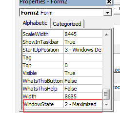
Jika sudah beres semua anda bisa mencoba run pada form1 (tampilan utama)
Lalu input datanya kemudian anda bisa memastikan tombol/button nya sudah berfungsi dengan baik.
Dan anda bisa mencetak databasenya menjadi report dengan mengklik tombol cetak dan mengeprintnya jika di perlukan.
!!! …. Praktis kan …. !!!
Ket :
• Tombol simpan untuk menyimpan (jika kode sama maka data tidak akan tersimpan karena kode adalah sebuah primary key yang tidak boleh sama nilainya).
• Tombol batal untuk menghapus data jika ingin kembali menginput data.
• Tombol ubah untuk mengubah data (sebelumnya pilih dulu data yang akan di ubah dengan mendouble click symbol panah yang ada di sebelah kiri, setelah itu ubah datanya, kemudian klik tombol ubah , jangan tombol simpan).
• Tombol hapus untuk menghapus data (pilih dulu data yang akan di hapus dengan mendouble click symbol panah yang ada di sebelah kiri, setelah itu klik tombol hapus).
• Tombol cetak untuk mencetak database menjadi tampilan report.
Dim strkoneksi As String
Dim koneksidb As ADODB.Connection
Dim rsbarang As ADODB.Recordset
Dim strsql As String
Private Sub cmdbatal_Click()
txtkode = ""
txtnama = ""
cmbsatuan = ""
txtharga = ""
txtstock = ""
txtkode.SetFocus
End Sub
Private Sub cmdhapus_Click()
strsql = "delete from barang where kode ='" & txtkode & "'"
koneksidb.Execute strsql
'koneksidb.Execute strsql (untuk mengeksekusi)
rsbarang.Requery
txtkode.Locked = False
Call cmdbatal_Click
End Sub
Private Sub cmdsimpan_Click()
strsql = "INSERT INTO BARANG (kode,nama_barang,satuan,harga,stock) values " & _
"('" & txtkode & "','" & txtnama & "','" & cmbsatuan & "','" & txtharga & "','" & txtstock & "')"
koneksidb.Execute strsql
rsbarang.Requery
End Sub
Private Sub cmdubah_Click()
strsql = "update barang set nama_barang='" & txtnama & "',satuan='" & cmbsatuan & "',harga='" & txtharga & "',stock='" & txtstock & "' where kode='" & txtkode & "'"
koneksidb.Execute strsql
rsbarang.Requery
'rsbarang.Requery (untuk merefresh datagridnya)
txtkode.Locked = False
End Sub
Private Sub Form_Load()
strkoneksi = "Provider=Microsoft.ACE.OLEDB.12.0;Data Source=D:\AMIK\pemrograman visual basic\database\inventory.accdb;Persist Security Info=False"
'membuat koneksi ke database
Set koneksidb = New ADODB.Connection
koneksidb.Open strkoneksi
'(database sudah terhubung)
'membuat recordset barang
Set rsbarang = New ADODB.Recordset
rsbarang.CursorLocation = adUseClient
strsql = "select*from barang order by kode"
'(order by kode artinya data akan di urutkan secara otomatis dengan kode)
rsbarang.Open strsql, koneksidb
'tampilkan data barang pada datagrid
Set grdtabel.DataSource = rsbarang
End Sub
Private Sub grdtabel_DblClick()
txtkode = rsbarang!kode
txtnama = rsbarang!nama_barang
cmbsatuan = rsbarang!satuan
txtharga = rsbarang!harga
txtstock = rsbarang!stock
txtkode.Locked = True
End Sub
Ini adalah contoh interfacenya :
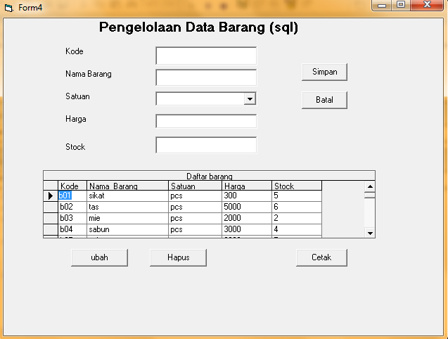
Dim strkoneksi As String
Dim koneksidb As ADODB.Connection
Dim rsgrid As ADODB.Recordset
Dim rsbarang As ADODB.Recordset
Dim sql As String
Dim vtotal, vjumlah As Single
Dim rsnota As ADODB.Recordset
Dim rsjual As ADODB.Recordset
Private Sub cmbnota_Click(Area As Integer)
If Area = dbcAreaList Then
'ambil data dari tabel jual
Set rsjual = New ADODB.Recordset
sql = "select * from jual where no_nota='" & cmbnota.Text & "'"
rsjual.Open sql, koneksidb
vtotal = rsjual!total_jual
lbltotal.Caption = Format(vtotal, "currency")
dtptgl.Value = rsjual!tgl_nota
txtkasir.Text = rsjual!kasir
'ambil datadetail dari tabel jualdetail
Set rsjual = New ADODB.Recordset
sql = "select * from barang inner join jualdetail on barang.kode = jualdetail.kode " & _
"where no_nota = '" & cmbnota.Text & "'"
rsjual.Open sql, koneksidb
Call tabelgrid
rsjual.MoveFirst
Do While Not rsjual.EOF
rsgrid!kode = rsjual.Fields("barang.kode")
rsgrid!nama_barang = rsjual!nama_barang
rsgrid!harga = rsjual!harga
rsgrid!qty = rsjual!qty
rsgrid!jumlah = rsjual!jumlah
rsjual.MoveNext
rsgrid.MoveNext
Loop
End If
End Sub
Private Sub cmdbatal_Click()
cmbnota.Text = ""
txtkasir.Text = ""
Call tabelgrid
cmbnota.SetFocus
End Sub
Private Sub cmdhapus_Click()
sql = "delete from jual where no_nota='" & cmbnota.Text & "'"
koneksidb.Execute sql
Set rsjual = New ADODB.Recordset
sql = "delete * from jualdetail " & _
"where no_nota = '" & cmbnota.Text & "'"
koneksidb.Execute sql
Call tabelgrid
'rsjual.MoveFirst
'Do While Not rsjual.EOF
' rsgrid!kode = rsjual.Fields("barang.kode")
' rsgrid!nama_barang = rsjual!nama_barang
' rsgrid!harga = rsjual!harga
'rsgrid!qty = rsjual!qty
'rsgrid!jumlah = rsjual!jumlah
'rsjual.MoveNext
'rsgrid.MoveNext
'Loop
cmbnota.Text = ""
txtkasir.Text = ""
Call tabelgrid
cmbnota.SetFocus
MsgBox "Data Berhasil Di hapus", vbOKOnly + vbInformation, "informasi"
End Sub
Private Sub cmdsimpan_Click()
'simpan data ke tabel jual
sql = "insert into jual(no_nota,tgl_nota,kasir,total_jual) VALUES " & _
"('" & cmbnota.Text & "','" & dtptgl.Value & "','" & txtkasir & "','" & vtotal & "')"
koneksidb.Execute sql
'simpan detail penjualan kedalam tabel jualdetail
rsgrid.MoveFirst
Do While rsgrid!kode <> ""
sql = "insert into jualdetail (no_nota,kode,qty,jumlah) values " & _
"('" & cmbnota.Text & "','" & rsgrid!kode & "','" & rsgrid!qty & "','" & rsgrid!jumlah & "')"
koneksidb.Execute sql
rsgrid.MoveNext
Loop
MsgBox "data telah di simpan"
rsnota.Requery
cmbnota.Text = ""
txtkasir.Text = ""
Call tabelgrid
cmbnota.SetFocus
End Sub
Private Sub cmdubah_Click()
'sql = "update rsnota"
'koneksidb.Execute sql
'simpan detail penjualan kedalam tabel jualdetail
'rsgrid.MoveFirst
'Do While rsgrid!kode <> ""
'sql = "update jualdetail set (no_nota,kode,qty,jumlah) values " & _
"('" & cmbnota.Text & "','" & rsgrid!kode & "','" & rsgrid!qty & "','" & rsgrid!jumlah & "')"
' koneksidb.Execute sql
' rsgrid.MoveNext
'rsgrid.Update
'Loop
'MsgBox "data telah di ubah"
'rsnota.Requery
End Sub
Private Sub Form_Load()
strkoneksi = "Provider=Microsoft.ACE.OLEDB.12.0;Data Source=D:\AMIK\pemrograman visual basic\database\inventory.accdb;Persist Security Info=False"
'membuat koneksi ke database
Set koneksidb = New ADODB.Connection
koneksidb.Open strkoneksi
'(database sudah terhubung)
Call tabelgrid
'mengisi data combo dengan tabel jual
Set rsnota = New ADODB.Recordset
sql = "SELECT no_nota from jual"
rsnota.Open sql, koneksidb, adOpenKeyset
Set cmbnota.RowSource = rsnota 'muncul di datacombo nota
cmbnota.ListField = "no_nota"
End Sub
Sub tabelgrid()
Set rsgrid = New ADODB.Recordset
rsgrid.Fields.Append "Kode", adVarChar, 3
rsgrid.Fields.Append "Nama_Barang", adVarChar, 30
rsgrid.Fields.Append "Harga", adSingle
rsgrid.Fields.Append "Qty", adSingle
rsgrid.Fields.Append "Jumlah", adSingle
rsgrid.Open
For X = 1 To 20
rsgrid.AddNew
Next
rsgrid.MoveFirst
Set grdtabel.DataSource = rsgrid
End Sub
Sub caribarang()
Set rsbarang = New ADODB.Recordset
sql = "SELECT * FROM barang WHERE kode='" & rsgrid!kode & "'"
rsbarang.Open sql, koneksidb
If Not rsbarang.EOF Then
rsgrid!kode = rsbarang!kode
rsgrid!nama_barang = rsbarang!nama_barang
rsgrid!harga = rsbarang!harga
rsgrid!qty = 1
rsgrid!jumlah = rsgrid!harga * rsgrid!qty
'hitung total
vtotal = vtotal + rsgrid!jumlah
lbltotal.Caption = Format(vtotal, "currency")
rsgrid.MoveNext
Else
MsgBox "kode barang tidak di temukan."
rsgrid!kode = ""
End If
End Sub
Private Sub grdtabel_AfterColEdit(ByVal ColIndex As Integer)
vjumlah = rsgrid!jumlah
Select Case ColIndex
Case 0:
Call caribarang
Case 3:
Call rubahqty
End Select
End Sub
Sub rubahqty()
rsgrid!jumlah = rsgrid!harga * rsgrid!qty
vtotal = vtotal + (rsgrid!harga * rsgrid!qty) - vjumlah
lbltotal.Caption = Format(vtotal, "currency")
End Sub
Ini adalah contoh interfacenya :
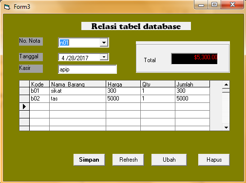
Dim strkoneksi As String
Dim koneksidb As ADODB.Connection
Dim rskaryawan As ADODB.Recordset
Dim rsgajipokok As ADODB.Recordset
Dim rsgrid As ADODB.Recordset
Dim sql As String
Dim i As Long
Dim merah, hijau, biru As Integer
'Dim vgapok, vtun, vpajak, vgaji, vins As Single
Private Sub cmdsimpan_Click()
Set rskaryawan = New ADODB.Recordset
sql = "insert into karyawan (Nama_Karyawan,Gol) VALUES " & _
"('" & txtnama.Text & "','" & cmbgol.Text & "')"
koneksidb.Execute sql
MsgBox "Data Berhasil Di simpan", vbOKOnly + vbInformation, "informasi"
txtnama = ""
cmbgol = ""
txtnama.SetFocus
End Sub
Private Sub cmdtampil_Click()
ProgressBar1.Visible = True
Timer3.Enabled = True
End Sub
Private Sub Command1_Click()
sql = "delete from karyawan where Nama_Karyawan ='" & txtnama & "'"
koneksidb.Execute sql
rsgrid.Delete
txtnama = ""
cmbgol = ""
txtnama.SetFocus
End Sub
Private Sub Form_Load()
i = 0
Label2.FontSize = 20
Timer3.Enabled = False
Label2 = "PENGELOLAAN GAJI KARYAWAN PT.SUDO"
strkoneksi = "Provider=Microsoft.ACE.OLEDB.12.0;Data Source=D:\AMIK\pemrograman visual basic\database\inventory.accdb;Persist Security Info=False"
Set koneksidb = New ADODB.Connection
koneksidb.Open strkoneksi
Call tabelgrid
End Sub
Private Sub grdtabel_Click()
txtnama.Text = rsgrid!Nama_Karyawan
cmbgol.Text = rsgrid!Gol
End Sub
Private Sub Timer1_Timer()
Label2.ForeColor = RGB(Rnd * 250, Rnd * 250, Rnd * 250)
If (Label2.Left + Label2.Width) <= 0 Then
Label2.Left = Me.Width
End If
Label2.Left = Label2.Left - 100
End Sub
Private Sub Timer2_Timer()
i = i + 1
If i = 1000000 Then i = 0 'Supaya tdk overflow, dsb...
merah = Int(255 * Rnd) 'Bangkitkan angka random untuk merah
hijau = Int(255 * Rnd) 'Bangkitkan angka random untuk hijau
biru = Int(255 * Rnd) 'Bangkitkan angka random untuk biru
Label5.ForeColor = RGB(merah, hijau, biru) 'Campur tiga warna
If i Mod 2 = 0 Then 'Jika counter habis dibagi 2
Label5.Visible = True 'Tampilkan label
Label5.Visible = False 'Sembunyikan label
Else 'Jika counter tidak habis dibagi 2
End If 'Akhir pemeriksaan
End Sub
Sub hitung()
If rsgrid!Gol = "C" Then
rsgrid!Insentif = "500000"
Else
If rsgrid!Gol = "B" Then
rsgrid!Insentif = "200000"
Else
If rsgrid!Gol = "A" Then
rsgrid!Insentif = "200000"
End If
End If
End If
End Sub
Sub tabelgrid()
Set rsgrid = New ADODB.Recordset
rsgrid.Fields.Append "Nama_Karyawan", adVarChar, 30
rsgrid.Fields.Append "Gol", adVarChar, 1
rsgrid.Fields.Append "Gapok", adSingle
rsgrid.Fields.Append "Tunjangan", adSingle
rsgrid.Fields.Append "Insentif", adSingle
rsgrid.Fields.Append "PPH", adSingle
rsgrid.Fields.Append "Gaji", adSingle
rsgrid.Open
For X = 1 To 30
rsgrid.AddNew
Next
rsgrid.MoveFirst
Set grdtabel.DataSource = rsgrid
End Sub
Private Sub Timer3_Timer()
ProgressBar1.Value = ProgressBar1.Value + 1
If ProgressBar1.Value = ProgressBar1.Max Then
Call proses
MsgBox "complete", vbInformation, "informasi"
Timer3.Enabled = False
ProgressBar1.Visible = False
End If
End Sub
Sub proses()
Set rskaryawan = New ADODB.Recordset
sql = "select * from karyawan inner join gajipokok on karyawan.Gol = gajipokok.Gol"
rskaryawan.Open sql, koneksidb
Call tabelgrid
rskaryawan.MoveFirst
Do While Not rskaryawan.EOF
rsgrid!Nama_Karyawan = rskaryawan!Nama_Karyawan
rsgrid!Gol = rskaryawan.Fields("karyawan.Gol")
rsgrid!Gapok = rskaryawan!Gapok
Call hitung
rsgrid!Tunjangan = rsgrid!Gapok * 20 / 100
rsgrid!PPH = 15 / 100 * (rsgrid!Gapok + rsgrid!Tunjangan + rsgrid!Insentif)
rsgrid!Gaji = (rsgrid!Gapok + rsgrid!Tunjangan + rsgrid!Insentif) - rsgrid!PPH
rskaryawan.MoveNext
rsgrid.MoveNext
Loop
End Sub
Ini adalah contoh interfacenya :
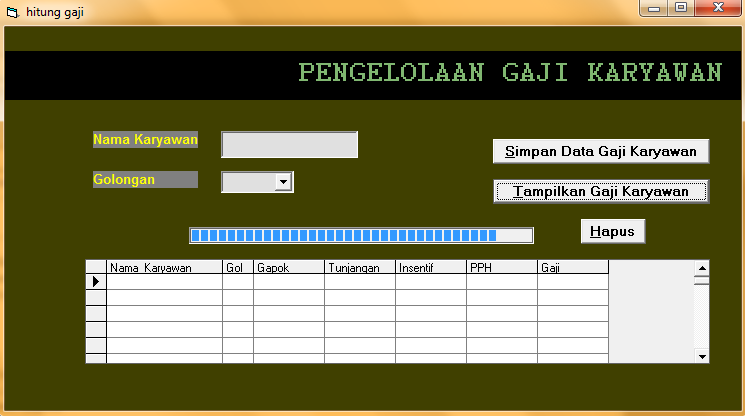
Dim strkoneksi As String
Dim koneksidb As ADODB.Connection
Dim rspelanggan As ADODB.Recordset
Dim rstdl As ADODB.Recordset
Dim rsgrid As ADODB.Recordset
Dim sql As String
Dim vtarif, vjamnyala As Single
Private Sub cmdtampil_Click()
Set rspelanggan = New ADODB.Recordset
sql = "select * from pelanggan inner join tdl on pelanggan.Daya = tdl.Daya"
rspelanggan.Open sql, koneksidb
Call tabelgrid
rspelanggan.MoveFirst
Do While Not rspelanggan.EOF
rsgrid!ID = rspelanggan!ID
rsgrid!Nama = rspelanggan!Nama
rsgrid!Daya = rspelanggan.Fields("pelanggan.Daya")
rsgrid!Kwh = rspelanggan!Kwh
Call hitung
rsgrid!Biaya_Beban = rspelanggan!Beban * (rsgrid!Daya / 1000)
rsgrid!Biaya_Pemakaian = vtarif * rsgrid!Kwh
rsgrid!PPJ = 5 / 100 * (rsgrid!Biaya_Beban + rsgrid!Biaya_Pemakaian)
rsgrid!Tagihan = rsgrid!Biaya_Beban + rsgrid!Biaya_Pemakaian + rsgrid!PPJ
rspelanggan.MoveNext
rsgrid.MoveNext
Loop
End Sub
Private Sub Form_Load()
strkoneksi = "Provider=Microsoft.ACE.OLEDB.12.0;Data Source=D:\AMIK\pemrograman visual basic\database\inventory.accdb;Persist Security Info=False"
Set koneksidb = New ADODB.Connection
koneksidb.Open strkoneksi
Call tabelgrid
End Sub
Sub tabelgrid()
Set rsgrid = New ADODB.Recordset
rsgrid.Fields.Append "ID", adVarChar, 2
rsgrid.Fields.Append "Nama", adVarChar, 30
rsgrid.Fields.Append "Daya", adSingle
rsgrid.Fields.Append "Kwh", adSingle
rsgrid.Fields.Append "Biaya_Beban", adSingle
'rsgrid.Fields.Append "jam", adSingle
rsgrid.Fields.Append "Biaya_Pemakaian", adSingle
rsgrid.Fields.Append "PPJ", adSingle
rsgrid.Fields.Append "Tagihan", adSingle
rsgrid.Open
For X = 1 To 30
rsgrid.AddNew
Next
rsgrid.MoveFirst
Set grdtabel.DataSource = rsgrid
End Sub
Sub hitung()
vjamnyala = rsgrid!Kwh / (rsgrid!Daya / 1000)
If rsgrid!Daya = 450 Then
vtarif = 400
Else
If rsgrid!Daya = 900 Then
vtarif = 600
Else
If rsgrid!Daya = 1300 Then
If vjamnyala < 40 Then
vtarif = 950 - 50
Else
vtarif = 950
End If
End If
End If
End If
End Sub
Ini adalah contoh interfacenya :
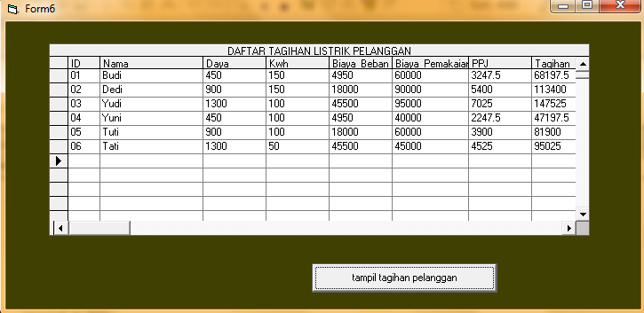